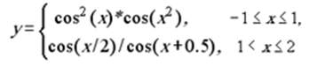
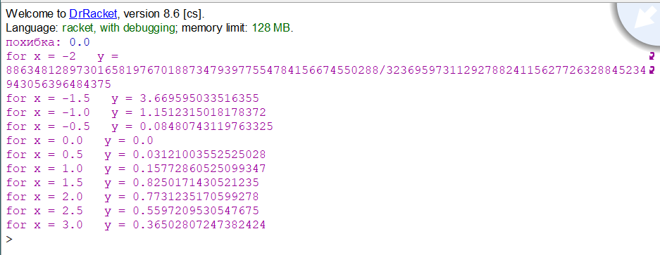
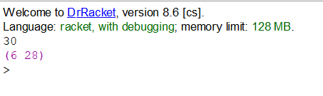

Вибір середовища
Racket — це універсальна багатопарадигмальна мова програмування та мультиплатформенний дистрибутив, який включає мову Racket, компілятор, велику стандартну бібліотеку, IDE, засоби розробки та набір додаткових мов. Мова Racket є сучасним діалектом Lisp і нащадком Scheme. Він створений як платформа для проектування та впровадження мови програмування. На додаток до основної мови Racket, Racket також використовується для позначення сімейства мов програмування та набору інструментів, що підтримують розробку на Racket і з ним. Racket також використовується для створення сценаріїв, навчання інформатиці та досліджень. Racket призначений для розробки програм та мов програмування. Це означає, що з його допомогою можна досліджувати не лише те, як писати програми, а й чому саме так.
Задача 1
Обчислити значення функції у, розвинувши функцію cos(x) у ряд Тейлора. Аргумент х змінюється від -2 до 3 з кроком 0.5. Визначити похибку
Код програми
#lang racket
(define (factorial n)
(if (= n 0)
1
(* n (factorial (- n 1)))))
(define (coss x . n)
(cond ((not (null? n))
(cond ((< 25 (car n))
0)
(else (- (/ (expt x (car n)) (factorial (car n)))
(coss x (+ 2 (car n)))))))
(else (- x (coss x 2)))))
(abs (- (coss 0.5 0) (cos 0.5)))
(define (counting x)
(cond
[(and (<= -2 x) (<= x 1))
(display "for x = ") + (display x) + (display " y = ")+
(display(* (sqr (coss x)) (coss (sqr x)))) +
(display"\n") +
(counting (+ x 0.5))]
[(and (< 1 x) (<= x 3))
(display "for x = ") + (display x) + (display " y = ")+
(display(/ (coss (/ x 2)) (coss (+ x 0.5)))) +
(display"\n") +
(counting (+ x 0.5))]
))
(counting -2)
Результати роботи програми
При виконанні програми в першому рядку відображується абсолютна похибка між вбудованою в мову функцію для розрахунку cos та між написаною власноруч функцією котра розвинена у ряд Тейлора. В наступних рядках відображуються значення у при конкретних значеннях х.
source file link
Задача 2
Ввести з клавіатури натуральне число n . Необхідно отримати всі досконалі числа, менші за n. Досконалим називається число, значення якого дорівнює сумі всіх його дільників.
Код програми
#lang racket
(define (proper-factors-of m)
(filter
(lambda (x) (= 0 (modulo m x)))
(sequence->list (in-range 1 m))))
(define (is-perfect? m)
(and
(> (length (proper-factors-of m)) 1)
(= (apply + (proper-factors-of m)) m)))
(define n (string->number(read-line (current-input-port) 'any)))
(display
(filter is-perfect?
(sequence->list (in-range n))))
Результати роботи програми
При заданому з клавіатури числі виводяться списком всі досконалі числа, які менше за n>.
source file link
Висновок
Після проведеної роботи було реалізовано дві програми з використанням рекурентних співвідношень. Друга програма для виведення досконалих чисел виявилася легшою, ніж перша. В першій задачі найбільшою складністю виявилося правильне написання умови cond. Сама лабораторна виявилася досить цікавою та пізнавальною.